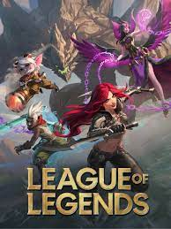
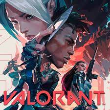
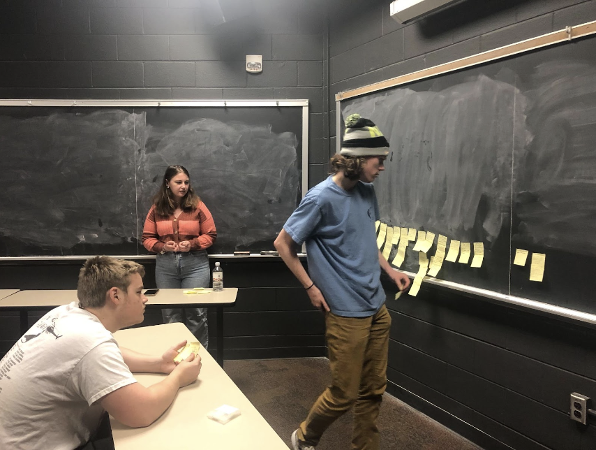
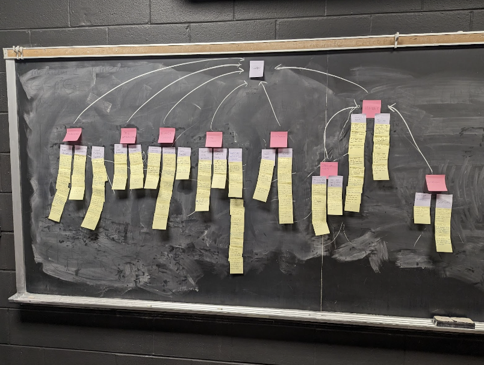
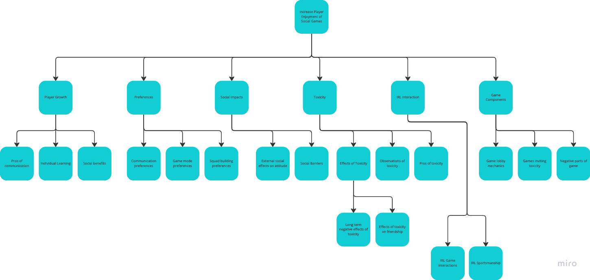

Project Description:
This semester, my team of 3 other students worked on a social technology project for our Human Computer Interaction class. We were tasked with designing a user-friendly and engaging social technology platform. To do this, we followed the four analysis phases of UX that we learned in class: contextual inquiry, contextual analysis, requirement extraction, and design-informing model construction.
Phase 1
Our Idea
Our team decided that we wanted to target the design to help people in the video game community. After researching the gaming industry as well as thinking back to our teams own personal knowledge of the industry, we settled on wanting to decrease toxicity in gaming.
To further narrow our target audience we decided to target two notoriously toxic games, League of Legends and Valorant. Both games are produced by Riot Games


League of Legends
Valorant
Concept Statement
The system name is Riot Gaming Compatibility Hub. Our user base will be primarily gamers who play titles from Riot Games, such as League Of Legends and Valorant. Our system will help players find a compatible group of people to play Riot titles with. ‘Compatible’, meaning, matching players with similar communication preferences, social interaction preferences, playstyles, and tolerance to toxicity. Players have difficulty finding other like-minded players based on these criteria, as Riot Games only matches players based on their skill-ranking on an ELO ladder. Our system will broaden this group-making approach based on the above criteria to allow players to have a more positive gaming experience. Through our system, we hope to minimize players feeling isolated in these competitive gaming environments and find the right group of people to play with, while simultaneously decreasing the overall toxicity present in these communities.
Introduction
We are designing a system in the domain of entertainment, particularly gaming, to help solve the problem of gamers not being able to find compatible and positive communities to play with. To magnify our scope, we are choosing to look closely at Riot Games and the gamers who play their titles. There exists a toxicity problem in many of their games, such as League of Legends and Valorant. We want to understand why players have a negative experience in competitive games. This could be due to toxicity or the inability to find a community that accepts them. It is important to consider what these gamers are expecting to get from their communities– game knowledge and skill improvement? Positive and reinforcing communication? Building relationships and making new friends? We will explore these ideas and implement a social technology that is designed to solve and help this section of gamers.
Contextual Analysis
For the contextual analysis we took interview observations and question data and created work activity notes (WANs) which were used to create the work activity affinity diagram (WAAD), which helps you analyze, group, and prioritize the information you've gathered.

Pictured: Laying out the first clusters on the WAAD. You take a card at random and place it on the board. The next person finds a card they think is similar and puts it nearby. You continue on splitting up and combining groups as needed.

Here is the completed WAAD. Altogether it was about 3 hours of grouping and placing. The goal is to do it all at once so that you can keep the same context and thought process from beginning to end.
The board can be hard to see so we made a digital representation of it. Each diamond represents a cluster or group. There are several layers of grouping.

Phase 2
Overview
We are designing a system in the domain of entertainment, particularly gaming, to help solve the problem of gamers not being able to find compatible and positive communities to play with. To magnify our scope, we are choosing to look closely at the North American region of Riot Games and the gamers who play their titles. Riot Games is an American game company that was founded in 2006, boasting online video game titles such as League of Legends, Valorant, and Teamfight Tactics (Tunakanski, 2023). We decided to focus on Riot Games because of its massive influence on the gaming community, especially considering that one of its titles, League of Legends, is one of the most played online games with over 100 million monthly players (ActivePlayer, 2022). Further, there exists a major toxicity problem in many of their games, especially League of Legends and Valorant, which are frequently ranked on lists regarding the “most toxic gaming communities” (Tury, 2022). To address the problem of toxicity in gaming, we need to focus on communities where this is prevalent, and Riot Games fits this need. We also narrowed our scope by focusing specifically on the North American region of Riot Games. There are several different regions that Riot Games has servers in, and along with that comes differences between the games, gaming communities, and cultures of the regions. To best fit our user’s needs, as well as apply our understanding of the region’s game, gaming communities, and culture, we are focusing on North America since it is our local server.
Personas
Our team created 4 personas to help us make targeted features for the user base.
Rodney Bellam
Rodney Bellam is a 17-year-old high school student living in sunny Daytona Beach, Florida. He is a dedicated and accomplished athlete on his high school’s varsity tennis team, where he plays #1 doubles. In addition to his athletic pursuits, Rodney is also passionate about animal welfare and spends much of his free time volunteering at a local animal shelter. Rodney's love for animals inspired him to pursue a career as a veterinarian, and he is currently applying to colleges with a Wildlife Biology major. He hopes to one day work with exotic animals and help to conserve their natural habitats. When he's not on the tennis court or volunteering, Rodney enjoys playing competitive video games. He's been playing games like Call of Duty, Valorant, and League of Legends for as long as he can remember, and considers himself to be a casual player who just tries to have fun during his matches. Unfortunately, Rodney has experienced a lot of toxicity while playing online games, which can sometimes make the experience less enjoyable for him. If it becomes too much to handle, he usually logs off for the day and comes back to play another time. Rodney understands that there are different types of players who enjoy playing games in various ways, but he wishes he could have more authority over the players he is queued with in his matches. In addition to his pursuits in tennis, animal welfare, and gaming, Rodney is also an avid reader of science fiction novels and loves exploring the natural beauty of Florida's beaches and parks. He is a kind and empathetic person who cares deeply about the world around him and is always looking for ways to make a positive impact.
Alex Raines
Alex Raines is a 12-year-old boy who lives with his mother in Seattle, Washington. He is an only child and enjoys playing competitive video games, with League of Legends being one of his favorite games. Alex loves playing as Yasuo, a champion that connects with his interest in Japanese culture. Alex is a reserved and shy kid; he enjoys reading, drawing, and watching anime in his spare time. Due to his shyness, Alex finds it challenging to initiate conversations or make friends easily. When playing League of Legends, he typically communicates via text chat, but he sometimes finds it difficult to keep up with the fast-paced nature of the game while typing. Alex enjoys playing League of Legends because he likes the sense of teamwork and strategy it involves, especially since he does not have any siblings that he can play with at home. However, he sometimes finds it frustrating when faced with toxic players who use offensive language or who intentionally disrupt the game. He wishes that he could play with more players who share his passion for the game and who value respect and sportsmanship.
Margeret Bolet
Margaret Bolet is a 21-year-old senior at the University of California Davis, where she is studying Animal Science with the goal of becoming a veterinarian. She is originally from Florida, and often commutes between the two states to visit her parents and two younger brothers during school breaks. Since its release in 2020, Margaret has been an avid Valorant player, even competing on her college's Esports Valorant team. She loves the fast-paced nature of the game, as well as its tactile gameplay. As the only female on her team, Margaret initially faced scrutiny from her male teammates when she joined. Despite this, she has continued to play and compete in Valorant, but still frequently faces discrimination and offensive remarks from other players. She typically deals with these situations by muting herself or reporting toxic behavior to the game's moderators. When she isn't gaming, Margaret enjoys playing volleyball and participating in her school's Aggie Ambassadors club, where she encourages prospective students to apply or attend UC Davis. Balancing her academic and extracurricular commitments can be challenging, but she has found that gaming helps her destress and unwind after a long day.
Sebastian Moraes
Sebastian Moraes is a 35-year-old male who works as a software engineer at Microsoft in Washington D.C., where he lives in a two bedroom apartment with one other male roommate named John. Sebastian was born and raised in São Paulo Brazil, but moved to the U.S. to pursue a bachelor’s degree and eventually obtained a job in the U.S. Sebastian used to enjoy playing competitive games in his spare time. He prefers the competitive variety of games because he competed in Junior High Soccer at a high level. He harbored that competitive edge and prefers the high-stakes gameplay of a competitive game. Sebastian used to play Counter-Strike in cyber-cafes in São Paulo. These cafes had internet access and high-end computers. Sebastian recently built a PC and is trying to get back into competitive gaming as he is still very fond of his former hobby. Sebastian stumbled upon the game, Valorant. Valorant is a 5v5 tactical first-person-shooter similar to Counter-Strike, and is the fastest growing competitive game in the world. While Sebastian enjoyed playing the game at first, he quickly realized a few problems with his competitive gaming experience. His first problem is there is a not well fleshed-out tutorial of the game. He is knowledgeable of the 5v5 and defuse game mode from his Counter-Strike experience, but there are currently twenty-one agents in Valorant with unique abilities and interactions. He could use a more in-depth tutorial provided by Valorant to gain an advantage. Sebastian’s second problem is he feels out of place playing competitive Valorant as a 35-year-old Brazilian man. He is required to play on the east coast servers of the US in order to have a reasonable latency. Also, the main demographic of Valorant trends younger. He would like to be able to find a like-minded group of players to game and play competitively.
Storyboard